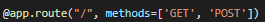
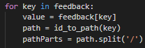
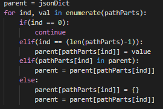
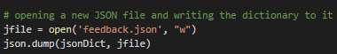
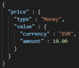

Flask Request Object
Once we have the form up and running, we can view it and edit it how we like. To submit any changes, we need to need to use the “request” object. To do this we import request and add “methods=[‘GET’,’POST’]” to the app route part of the flask program:
Then, we insert code checking if “request.method” is ‘POST’ and if it is then we pass “request.form” to our form parsing method which we will create now.
Form Parser Method
Now that we’ve passed the request.form object as a parameter, we can start to make sense of it. You’ll find that it is a dict and that helps us majorly. We create a new empty dict and iterate through each key in the request.form dict. As we used the path for our ID names, mentioned in the naming conventions part of the previous page, we can now reverse this to get the path from the ID. We do this, then split the path into path parts by using the .split(‘/’) method:
Here is where it gets more complicated so I will do my best to explain in as much detail as possible. As you can see in the code below, we create a parent variable and set it to our empty dict. This parent variable will be the direct parent of each element we deal with. As we iterate through each “part” in “pathParts”, we first check if the part is the first part. If it is, we just continue, as this is the base dictionary. We then check if it is the last part and if it is, we set the value of that part to "value" (a.k.a. feedback[key]). If the current part is in the parent dictionary already, then we change the parent dictionary to this part. For every other case, we set the part equal to an empty dictionary and set the parent to this part.
Now all that is left to do is save our new JSON file. We do this by using the json.dump() method:
Adding Type Information
Something I have not included in this tutorial is type information. Neither the parser nor the form creator accounts for this yet. This can be an issue and is a possible improvement you can make to your version of this JSON editor. If you do this, make sure and add type information along with your values so that any readers know what type of value you are referencing, e.g.:
For further issues, you can visit StackOverflow: https://stackoverflow.com/
or Contact Me: